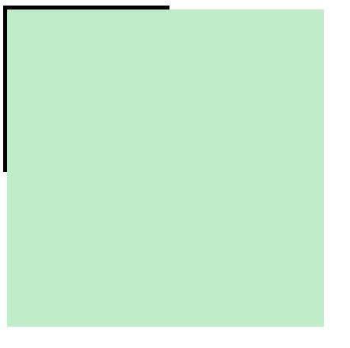
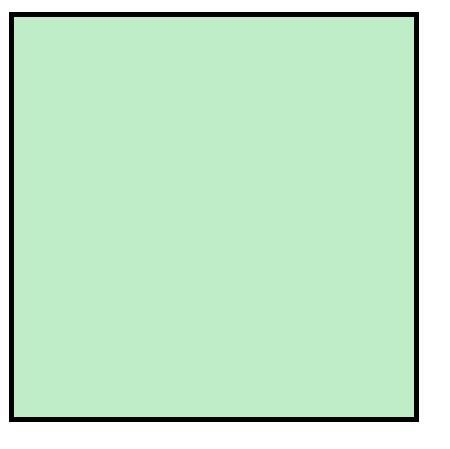
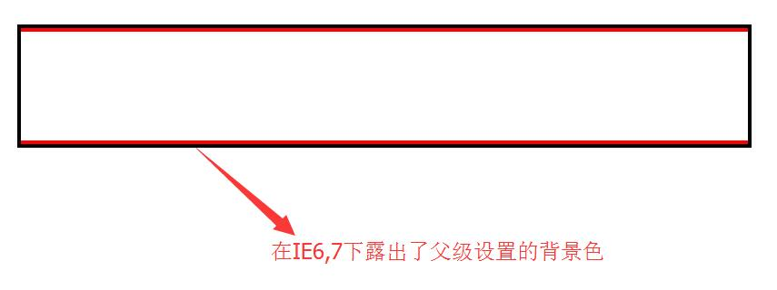

HTML5标签兼容
众所周知，在正常情况下IE7,8是无法使用HTML5标签的:
|
|
在现代浏览器中显示如下:
而在IE7,8下显示如下:
如何让IE7,8支持HTML5标签呢?
在开头引入
|
|
那么这个html5shiv.js究竟是何方神圣?其工作原理是什么？
以<header>为例，利用document.createElement('header')创建自定义标签，由于默认自定义标签为内联标签，故还需在<header>样式中加入display:block;.
这样IE7,8就实现了HTMl5标签的兼容
IE6子元素撑开父级宽高问题
在IE6下，若设置子级宽高大于父级，则会出现撑开父级宽高的异常现象.
|
|
在现代浏览器包括IE7,8中显示如下:

而在IE5,6下显示如下:

解决方案尚无，所以建议不要在子级中设置大于父级的宽高
p包含块元素嵌套规则
<p>,<td>,<h1>~<h6>不能嵌套块元素！否则会生成多余元素。
子级向父级传递margin-top/margin-bottom
解决方法:
触发父级BFC(overflow:hidden)，haslayout(zoom:1)
margin-top/margin-bottom上下叠加
解决方法:
尽量使用同一方向的margin，如都只设置margin-top或margin-bottom
display:inline-block问题
在IE6下，设置display:inline-block无效
解决方法:
IE6最小高度为19px
无论如何设置元素高度，在IE6下最小高度始终为19px
解决方法:
IE6双边距
浮动元素设置margin-left会产生双边距
解决方法:
IE6,7li间隙问题
在IE6,7下。多个li的子元素浮动会在每个li下产生4px间隙。
IE6,7浮动元素间有注释或内联元素产生的问题
触发条件:
浮动元素间有注释或内联元素；
浮动元素与父级宽度相差不超过3px.
解决方案:
不在浮动元素间用注释和内联元素；
与父级宽度相差超过3px;
IE6,7overflow:hidden父级无法包住position:relative元素
解决方案：
给父级加上*position:relative
IE6父级奇数宽高，绝对定位子元素right/bottom值会有1px偏差
解决方案:
避免父级宽高被设置为奇数
IE6下浮动元素和绝对定位元素并列绝对定位元素会消失
解决方案:
避免两者同级即可
IE6下input空隙
|
|
|
|

IE8下将只在上侧露出2px空隙
解决方案:
设置<input>浮动float:left
IE6下输入类型表单控件背景问题
IE6下，当输入文字占满输入框时，背景图片会被“挤走”
解决方案:
设置<input>的background-attachment:fixed
IE6下不支持PNG24透明效果
解决方案：
JS(缺陷:不能处理body标签上的PNG24)
12345<script src="js/DD_belatedPNG_0.0.8a.js"></script><script>DD_belatedPNG.fix("*")//选择器选取要修复的元素</script>滤镜处理
12345body{background:url(xx.png) no-repeat;_background-image:none;_filter:progid:DXImageTransform.Microsoft.AlphaImageLoader(src="xx.png",sizingMethod="crop");}
介绍一下CSS Hack
\9IE10及之前版本(加在属性值后)
*IE7及之前版本
_IE6及之前版本